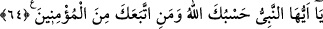

işaretler ve parıltılar görür. Bunları ancak envâr-ı ilâhiyyeye mazhar olmuş kimseler
görüp anlayabilir. (Avârifü’l-maârif’de böyle geçmektedir.)
Fakir (Bursevî) derim ki: Birbirine buğz eden iki hanımı olan müttaki bir âlim ve
zâhid şeyhin şöyle dediğini işittim: (Tefsir edilen) bu âyeti, okudum ve içinde su
bulunan bir testiye üfledim. Sonra da o suyu ikisine içirdim. Allah Teâlâ’nın izniyle
aralarında sevgi ve ülfet meydana geldi. Buğz ve nefret kaybolup gitti.
64. Ey peygamber, Allah sana ve sana tâbi olan müminlere yeter.
“Ey” Allah’tan haber getiren şânı yüce “peygamber,” her türlü işinde “Allah sana ve
sana tâbi olan müminlere yeter.” kâfidir.
Âyetteki “vav” harfi beraberlik mânâsına olduğu zaman meâli şöyle olur: “Ey
peygamber, Allah ve sana tâbi olan müminler sana yeter.” Ya da vav Allah lafzına atıf
mânâsına olduğunda meâli: “Allah, sana ve müminlere yeter.” şeklinde olur. Gerçekte
kâfî olan Allah Teâlâ’dır. Müminlerin de kâfî olduğunun belirtilmesi, onların Allah’ın
kâfî olmasına zâhiren sebep olmaları itibariyledir.
Bu âyet, Bedir’de savaşa başlamadan önce çölde Hz. Peygambere güç ve kuvvet
vermek ve sahabeyi (r.anhüm) teselli için nâzil olmuştur. Âyetteki “müminler”le Ensar
kastedilmiştir.
İbn Abbas (r. anhümâ) ise âyetin Hz. Ömer’in müslüman olması üzerine nâzil
olduğunu söyler. Bu durumda âyet, Mekkî olmuş olur. Rasûlullah (s.a.v.)’in emriyle
Medenî bir sûrenin içine yazılmıştır.
Rivayete göre Hz. Peygamber (a.s.)’a otuz üç erkek ve altı kadın îman etmişti. Allah
Teâlâ Hz. Ömer’in de müslüman olmasıyla bu sayıyı kırka tamamladı. Bunun üzerine de
bu âyet nâzil oldu. Peygamberimiz (s.a.v.): “Ey Allah’ım, iki adamdan birisiyle İslâm’ı
aziz eyle (bir rivayete göre teyid et): Ya Ebû Cehil b. Hişam veya Ömer b. Hattab ile.”
diye dua etmişti.[57] Efendimiz, bu duayı çarşamba günü yapmıştı. Hz. Ömer de
perşembe günü müslüman oldu. O zaman yirmi altı yaşındaydı. Hamza b. Abdulmuttalib
de Hz. Ömer’den üç gün -bir rivayete göre üç ay- önce müslüman olmuştu.
Rivayete göre: “Siz ve Allah’tan başka taptıklarınız cehennemin odunusunuz. Siz
oraya gireceksiniz.” (el-Enbiyâ, 21/98) âyeti nâzil olunca Ebû Cehil ayağa kalkıp
yüksek sesle şunları söyledi: “Ey Kureyşliler! Muhammed, ilâhlarınıza dil uzatıp sizi
beyinsizlikle suçluyor. Sizin, atalarınızın ve ilâhlarınızın cehennemlik olduğunu iddia
ediyor. İçinizde onu öldürecek bir er yok mu? Kim onu öldürürse kendisine kırmızı ve
siyah develerden yüz deve ve bin ukıyye gümüş vereceğim.”